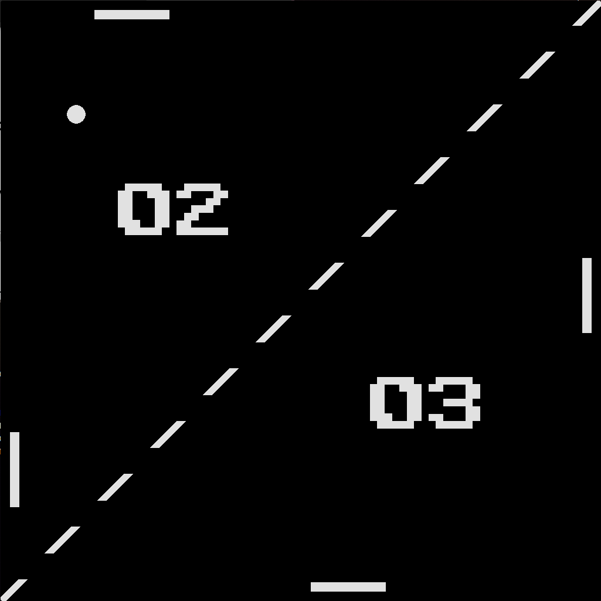
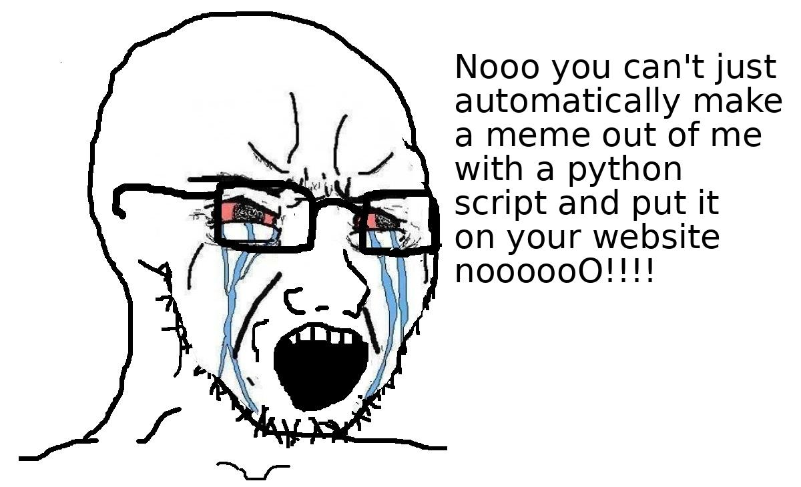

Applets
Assorted small programs I wrote in my free time pre-AI.
pong2:
Pong, but with twice the paddles. WASD and arrow keys battle for
the best score defending a ball of increasing speed.

soy.py / wojak-meme-bot
Covid-era Discord/Reddit bot that portrays your opponent as
a soyjak. Remind me to refactor this for X.

cweather:
Command line utility in C using ip geolocation and a weather API to
deliver weather data in text form for widgets.
xbacklight-auto:
Another utility in C that uses the Linux video API to get camera
data and make an estimate of the surrounding brightness, then
change the screen brightness to match.